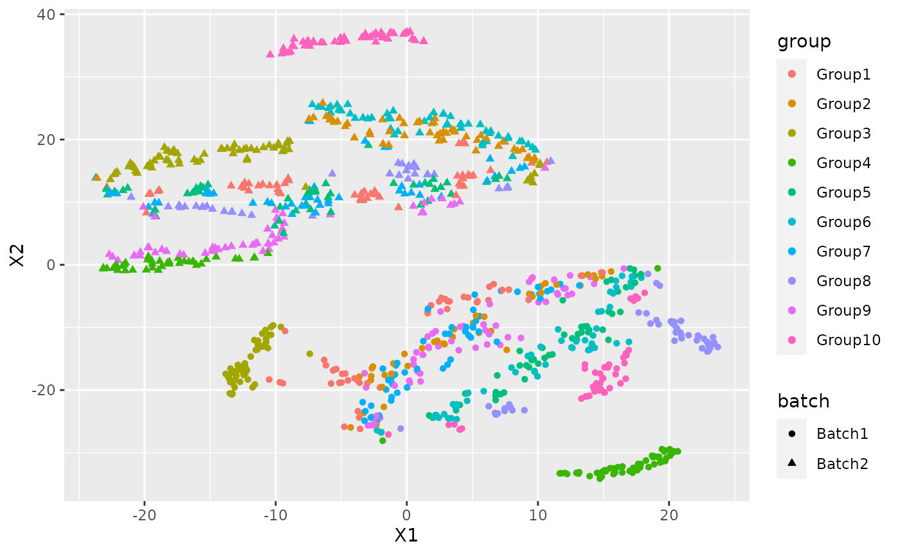

Introduction to NewWave
EuroBioc 2020: 14-18 December
Workshop Description
The fast development of single cell sequencing technologies in the recent years has generated a gap between the throughput of the experiments and the capability of analizing the generated data. In this package, we implement mini-batch stochastic gradient descent and the possibility to work with HDF5 files. We decided to use a negative binomial model following the observation that droplet sequencing technologies do not induce zero inflation in the data. Thanks to these improvements and the possibility of massively parallelize the estimation process using PSOCK clusters, we are able to speed up the computation.
Introduction
NewWave is a new package that assumes a Negative Binomial distributions for dimensionality reduction and batch effect removal. In order to reduce the memory consumption it uses a PSOCK cluster combined with the R package SharedObject that allow to share a matrix between different cores without memory duplication. Thanks to that we can massively parallelize the estimation process with huge benefit in terms of time consumption. We can reduce even more the time consumption using some minibatch approaches on the different steps of the optimization.
I am going to show how to use NewWave with example data generated with Splatter.
Splatter is a R package designed to generate single cell transcriptomic data with a high level of customization.
In our implementation we want a batch effect to be corrected, the additionals batch parameters are setted in order to create more complex batch effect instead of defoult.
Think to the group as a cell type, we will use those group to test the resulted low dimensional representation throught a cluster analysis.
params <- newSplatParams()
N=1000
set.seed(1234)
data <- splatSimulateGroups(params,batchCells=c(N/2,N/2),
group.prob = rep(0.1,10),
de.prob = 0.2,
batch.facLoc = 2,
batch.facScale = 1,
verbose = FALSE) The resoult of splatter is a SingleCellExperiment with the generated data in the assays counts.
data
#> class: SingleCellExperiment
#> dim: 10000 1000
#> metadata(1): Params
#> assays(6): BatchCellMeans BaseCellMeans ... TrueCounts counts
#> rownames(10000): Gene1 Gene2 ... Gene9999 Gene10000
#> rowData names(16): Gene BaseGeneMean ... DEFacGroup9 DEFacGroup10
#> colnames(1000): Cell1 Cell2 ... Cell999 Cell1000
#> colData names(4): Cell Batch Group ExpLibSize
#> reducedDimNames(0):
#> altExpNames(0):As you can see we have the number of cell that we choose(N=500) an 10 000 genes. For this workshop we will choose only the 1000 most variable genes.
hvg <- rowVars(counts(data))
names(hvg) <- rownames(counts(data))
data <- data[names(sort(hvg,decreasing=TRUE))[1:500],]In a SingleCellExperiment the colData slot contains the sample level metadata. In our situation there are two important variable, Batch and Group.
colData(data)
#> DataFrame with 1000 rows and 4 columns
#> Cell Batch Group ExpLibSize
#> <character> <character> <factor> <numeric>
#> Cell1 Cell1 Batch1 Group5 53416.6
#> Cell2 Cell2 Batch1 Group4 53788.6
#> Cell3 Cell3 Batch1 Group8 69984.2
#> Cell4 Cell4 Batch1 Group8 63404.5
#> Cell5 Cell5 Batch1 Group9 55837.9
#> ... ... ... ... ...
#> Cell996 Cell996 Batch2 Group3 57537.0
#> Cell997 Cell997 Batch2 Group1 43552.6
#> Cell998 Cell998 Batch2 Group4 68324.0
#> Cell999 Cell999 Batch2 Group3 63489.0
#> Cell1000 Cell1000 Batch2 Group9 64149.7IMPORTANT: For batch effecr removal the batch variable must be a factor
data$Batch <- as.factor(data$Batch)NewWave takes as input raw data, not normalized. So now we have all the object needed to start.
We can see the how the cells are distributed between group and batch.
pca <- prcomp_irlba(t(counts(data)),n=10)
plot_data <-data.frame(Rtsne(pca$x)$Y)
plot_data$batch <- data$Batch
plot_data$group <- data$Group
ggplot(plot_data, aes(x=X1,y=X2,col=group, shape=batch))+ geom_point() Just for a later comparison let’s see the performance of clustering on PCA low dimensional representation.
cluster <- kmeans(pca$x, 10)
adjustedRandIndex(cluster$cluster, data$Group)
#> [1] 0.03949584There is a clear batch effect between the cells.
Let’s try to correct it.
NewWave
I am going to show different implementation and the suggested way to use them with the given hardware.
Some basic advise:
- Verbose option has default FALSE, in this vignette I will change it for explanatory intentions, don’t do it with big dataset because it can sensibly slower the computation
- There are no concern about the dimension of mini-batches, I always used the 10% of the observations
Standard usage
I am going to present the stadard implementation of NewWave, it uses 1 cores, it estimates a dispersion parameters equal for all observation and uses all the observation in the estimation process.
The K parameter represents the number of dimension of the latent rapresentation.
The X parameter is used to indicates which variable represent the batch effect, in the same way can be inserted other cell-related variable and if you need some gene related variable those can be inserted in V.
res <- newWave(data, X = "~Batch", K=10, verbose = TRUE)
#> Time of setup
#> user system elapsed
#> 0.009 0.004 0.331
#> Time of initialization
#> user system elapsed
#> 0.063 0.004 0.995
#> Iteration 1
#> penalized log-likelihood = -2065512.54139726
#> Time of dispersion optimization
#> user system elapsed
#> 1.132 0.057 1.162
#> after optimize dispersion = -1777332.75031906
#> Time of right optimization
#> user system elapsed
#> 0.000 0.000 11.992
#> after right optimization= -1729847.99936925
#> after orthogonalization = -1729844.4376134
#> Time of left optimization
#> user system elapsed
#> 0.027 0.012 11.859
#> after left optimization= -1723772.95382354
#> after orthogonalization = -1723772.60552776
#> Iteration 2
#> penalized log-likelihood = -1723772.60552776
#> Time of dispersion optimization
#> user system elapsed
#> 1.257 0.072 1.210
#> after optimize dispersion = -1722794.58131023
#> Time of right optimization
#> user system elapsed
#> 0.001 0.000 11.907
#> after right optimization= -1722283.59437893
#> after orthogonalization = -1722283.50293497
#> Time of left optimization
#> user system elapsed
#> 0.02 0.02 12.60
#> after left optimization= -1722075.24146541
#> after orthogonalization = -1722075.17358539
#> Iteration 3
#> penalized log-likelihood = -1722075.17358539
#> Time of dispersion optimization
#> user system elapsed
#> 1.221 0.069 1.170
#> after optimize dispersion = -1722072.41346738
#> Time of right optimization
#> user system elapsed
#> 0.001 0.000 10.730
#> after right optimization= -1721952.74993397
#> after orthogonalization = -1721952.69517518
#> Time of left optimization
#> user system elapsed
#> 0.005 0.032 12.268
#> after left optimization= -1721870.70571689
#> after orthogonalization = -1721870.68328032
#> Iteration 4
#> penalized log-likelihood = -1721870.68328032
#> Time of dispersion optimization
#> user system elapsed
#> 1.233 0.060 1.174
#> after optimize dispersion = -1721870.58928044
#> Time of right optimization
#> user system elapsed
#> 0.001 0.000 9.809
#> after right optimization= -1721806.24431404
#> after orthogonalization = -1721806.1939903
#> Time of left optimization
#> user system elapsed
#> 0.031 0.008 11.702
#> after left optimization= -1721756.96418646
#> after orthogonalization = -1721756.9473855In order to make it faster you can increase the number of cores using “children” parameter:
res2 <- newWave(data,X = "~Batch", K=10, verbose = TRUE, children=2)
#> Time of setup
#> user system elapsed
#> 0.010 0.004 0.318
#> Time of initialization
#> user system elapsed
#> 0.048 0.008 0.788
#> Iteration 1
#> penalized log-likelihood = -2065512.54139846
#> Time of dispersion optimization
#> user system elapsed
#> 1.123 0.028 1.114
#> after optimize dispersion = -1777332.7503252
#> Time of right optimization
#> user system elapsed
#> 0.000 0.000 12.266
#> after right optimization= -1729847.99935577
#> after orthogonalization = -1729844.43759999
#> Time of left optimization
#> user system elapsed
#> 0.007 0.012 5.972
#> after left optimization= -1723772.953446
#> after orthogonalization = -1723772.60514951
#> Iteration 2
#> penalized log-likelihood = -1723772.60514951
#> Time of dispersion optimization
#> user system elapsed
#> 1.223 0.084 1.180
#> after optimize dispersion = -1722794.58187868
#> Time of right optimization
#> user system elapsed
#> 0.001 0.000 13.286
#> after right optimization= -1722283.59422189
#> after orthogonalization = -1722283.5027724
#> Time of left optimization
#> user system elapsed
#> 0.017 0.012 6.238
#> after left optimization= -1722075.24928323
#> after orthogonalization = -1722075.18139377
#> Iteration 3
#> penalized log-likelihood = -1722075.18139377
#> Time of dispersion optimization
#> user system elapsed
#> 1.232 0.076 1.188
#> after optimize dispersion = -1722072.42163634
#> Time of right optimization
#> user system elapsed
#> 0.001 0.001 10.734
#> after right optimization= -1721952.51857087
#> after orthogonalization = -1721952.46385013
#> Time of left optimization
#> user system elapsed
#> 0.016 0.024 6.303
#> after left optimization= -1721870.43370873
#> after orthogonalization = -1721870.41107056
#> Iteration 4
#> penalized log-likelihood = -1721870.41107056
#> Time of dispersion optimization
#> user system elapsed
#> 1.256 0.048 1.184
#> after optimize dispersion = -1721870.31681561
#> Time of right optimization
#> user system elapsed
#> 0.000 0.000 10.087
#> after right optimization= -1721806.27238247
#> after orthogonalization = -1721806.2217882
#> Time of left optimization
#> user system elapsed
#> 0.021 0.016 5.911
#> after left optimization= -1721756.8884599
#> after orthogonalization = -1721756.87158308Commonwise dispersion and minibatch approaches
If you do not have an high number of cores to run newWave this is the fastest way to run.
The optimization process is done by three process itereated until convercence.
- Optimization of the dispersion parameters
- Optimization of the gene related parameters
- Optimization of the cell related parameters
Each of these three steps can be accelerated using mini batch, the number of observation is settled with these parameters:
- n_gene_disp : Number of genes to use in the dispersion optimization
- n_cell_par : Number of cells to use in the cells related parameters optimization
- n_gene_par : Number of genes to use in the genes related parameters optimization
res3 <- newWave(data,X = "~Batch", verbose = TRUE,K=10, children=2,
n_gene_disp = 100, n_gene_par = 100, n_cell_par = 100)
#> Time of setup
#> user system elapsed
#> 0.010 0.004 0.320
#> Time of initialization
#> user system elapsed
#> 0.056 0.000 0.732
#> Iteration 1
#> penalized log-likelihood = -2065512.54139783
#> Time of dispersion optimization
#> user system elapsed
#> 1.121 0.024 1.107
#> after optimize dispersion = -1777332.75031023
#> Time of right optimization
#> user system elapsed
#> 0.001 0.000 13.254
#> after right optimization= -1729847.99934542
#> after orthogonalization = -1729844.43758966
#> Time of left optimization
#> user system elapsed
#> 0.028 0.012 6.103
#> after left optimization= -1723772.95343943
#> after orthogonalization = -1723772.60514294
#> Iteration 2
#> penalized log-likelihood = -1723772.60514294
#> Time of dispersion optimization
#> user system elapsed
#> 0.438 0.064 0.383
#> after optimize dispersion = -1722908.07782344
#> Time of right optimization
#> user system elapsed
#> 0.001 0.000 2.677
#> after right optimization= -1722790.90862571
#> after orthogonalization = -1722790.89469987
#> Time of left optimization
#> user system elapsed
#> 0.026 0.012 0.676
#> after left optimization= -1722784.94246851
#> after orthogonalization = -1722784.94212197
#> Iteration 3
#> penalized log-likelihood = -1722784.94212197
#> Time of dispersion optimization
#> user system elapsed
#> 0.454 0.049 0.383
#> after optimize dispersion = -1722750.73885448
#> Time of right optimization
#> user system elapsed
#> 0.000 0.000 2.423
#> after right optimization= -1722674.30694858
#> after orthogonalization = -1722674.30108943
#> Time of left optimization
#> user system elapsed
#> 0.014 0.004 0.653
#> after left optimization= -1722665.01451073
#> after orthogonalization = -1722665.01367221Genewise dispersion mini-batch
If you have a lot of core disposable or you want to estimate a genewise dispersion parameter this is the fastes configuration:
res3 <- newWave(data,X = "~Batch", verbose = TRUE,K=10, children=2,
n_gene_par = 100, n_cell_par = 100, commondispersion = FALSE)
#> Time of setup
#> user system elapsed
#> 0.010 0.004 0.329
#> Time of initialization
#> user system elapsed
#> 0.054 0.003 0.753
#> Iteration 1
#> penalized log-likelihood = -2065512.54139777
#> Time of dispersion optimization
#> user system elapsed
#> 1.122 0.020 1.111
#> after optimize dispersion = -1777332.75031636
#> Time of right optimization
#> user system elapsed
#> 0.001 0.000 12.013
#> after right optimization= -1729847.99934963
#> after orthogonalization = -1729844.43759386
#> Time of left optimization
#> user system elapsed
#> 0.016 0.020 6.048
#> after left optimization= -1723772.95344137
#> after orthogonalization = -1723772.60514487
#> Iteration 2
#> penalized log-likelihood = -1723772.60514487
#> Time of dispersion optimization
#> user system elapsed
#> 0.109 0.089 0.946
#> after optimize dispersion = -1716752.02580949
#> Time of right optimization
#> user system elapsed
#> 0.000 0.000 2.838
#> after right optimization= -1716661.56542251
#> after orthogonalization = -1716661.55445373
#> Time of left optimization
#> user system elapsed
#> 0.006 0.007 0.723
#> after left optimization= -1716616.75395123
#> after orthogonalization = -1716616.75306738
#> Iteration 3
#> penalized log-likelihood = -1716616.75306738
#> Time of dispersion optimization
#> user system elapsed
#> 0.152 0.064 0.473
#> after optimize dispersion = -1716616.99593022
#> Time of right optimization
#> user system elapsed
#> 0.001 0.000 2.477
#> after right optimization= -1716557.60878237
#> after orthogonalization = -1716557.60418941
#> Time of left optimization
#> user system elapsed
#> 0.008 0.020 0.688
#> after left optimization= -1716511.96121269
#> after orthogonalization = -1716511.96057207NB: do not use n_gene_disp in this case, it will slower the computation.
Now I can use the latent dimension rapresentation for visualization purpose:
latent <- reducedDim(res)
tsne_latent <- data.frame(Rtsne(latent)$Y)
tsne_latent$batch <- data$Batch
tsne_latent$group <- data$Group
ggplot(tsne_latent, aes(x=X1,y=X2,col=group, shape=batch))+ geom_point()
or for clustering:
cluster <- kmeans(latent, 10)
adjustedRandIndex(cluster$cluster, data$Group)
#> [1] 0.8703356NewWave on DelayedArray
library(TENxBrainData)
#> Loading required package: HDF5Array
#> Loading required package: DelayedArray
#>
#> Attaching package: 'DelayedArray'
#> The following objects are masked from 'package:base':
#>
#> aperm, apply, rowsum, scale, sweep
#> Loading required package: rhdf5Session Information
sessionInfo()
#> R Under development (unstable) (2020-12-04 r79554)
#> Platform: x86_64-pc-linux-gnu (64-bit)
#> Running under: Ubuntu 20.04.1 LTS
#>
#> Matrix products: default
#> BLAS/LAPACK: /usr/lib/x86_64-linux-gnu/openblas-pthread/libopenblasp-r0.3.8.so
#>
#> locale:
#> [1] LC_CTYPE=en_US.UTF-8 LC_NUMERIC=C
#> [3] LC_TIME=en_US.UTF-8 LC_COLLATE=en_US.UTF-8
#> [5] LC_MONETARY=en_US.UTF-8 LC_MESSAGES=C
#> [7] LC_PAPER=en_US.UTF-8 LC_NAME=C
#> [9] LC_ADDRESS=C LC_TELEPHONE=C
#> [11] LC_MEASUREMENT=en_US.UTF-8 LC_IDENTIFICATION=C
#>
#> attached base packages:
#> [1] parallel stats4 stats graphics grDevices utils datasets
#> [8] methods base
#>
#> other attached packages:
#> [1] TENxBrainData_1.11.0 HDF5Array_1.19.0
#> [3] rhdf5_2.35.0 DelayedArray_0.17.4
#> [5] NewWave_1.1.1 SharedObject_1.5.5
#> [7] mclust_5.4.7 ggplot2_3.3.2
#> [9] Rtsne_0.15 irlba_2.3.3
#> [11] Matrix_1.2-18 splatter_1.15.1
#> [13] SingleCellExperiment_1.13.3 SummarizedExperiment_1.21.0
#> [15] Biobase_2.51.0 GenomicRanges_1.43.0
#> [17] GenomeInfoDb_1.27.1 IRanges_2.25.4
#> [19] S4Vectors_0.29.5 BiocGenerics_0.37.0
#> [21] MatrixGenerics_1.3.0 matrixStats_0.57.0
#>
#> loaded via a namespace (and not attached):
#> [1] bitops_1.0-6 fs_1.5.0
#> [3] bit64_4.0.5 filelock_1.0.2
#> [5] httr_1.4.2 rprojroot_2.0.2
#> [7] tools_4.1.0 backports_1.2.0
#> [9] R6_2.5.0 DBI_1.1.0
#> [11] colorspace_2.0-0 rhdf5filters_1.3.2
#> [13] withr_2.3.0 tidyselect_1.1.0
#> [15] bit_4.0.4 curl_4.3
#> [17] compiler_4.1.0 textshaping_0.2.1
#> [19] desc_1.2.0 labeling_0.4.2
#> [21] scales_1.1.1 checkmate_2.0.0
#> [23] rappdirs_0.3.1 pkgdown_1.6.1
#> [25] systemfonts_0.3.2 stringr_1.4.0
#> [27] digest_0.6.27 rmarkdown_2.5
#> [29] XVector_0.31.0 pkgconfig_2.0.3
#> [31] htmltools_0.5.0 fastmap_1.0.1
#> [33] dbplyr_2.0.0 rlang_0.4.9
#> [35] RSQLite_2.2.1 shiny_1.5.0
#> [37] farver_2.0.3 generics_0.1.0
#> [39] BiocParallel_1.25.1 dplyr_1.0.2
#> [41] RCurl_1.98-1.2 magrittr_2.0.1
#> [43] BiocSingular_1.7.0 GenomeInfoDbData_1.2.4
#> [45] Rcpp_1.0.5 munsell_0.5.0
#> [47] Rhdf5lib_1.13.0 lifecycle_0.2.0
#> [49] stringi_1.5.3 yaml_2.2.1
#> [51] zlibbioc_1.37.0 BiocFileCache_1.15.1
#> [53] AnnotationHub_2.23.0 grid_4.1.0
#> [55] blob_1.2.1 promises_1.1.1
#> [57] ExperimentHub_1.17.0 crayon_1.3.4
#> [59] lattice_0.20-41 beachmat_2.7.2
#> [61] locfit_1.5-9.4 knitr_1.30
#> [63] pillar_1.4.7 glue_1.4.2
#> [65] BiocVersion_3.13.1 evaluate_0.14
#> [67] BiocManager_1.30.10 httpuv_1.5.4
#> [69] vctrs_0.3.5 gtable_0.3.0
#> [71] purrr_0.3.4 assertthat_0.2.1
#> [73] xfun_0.19 mime_0.9
#> [75] rsvd_1.0.3 xtable_1.8-4
#> [77] later_1.1.0.1 ragg_0.4.0
#> [79] tibble_3.0.4 AnnotationDbi_1.53.0
#> [81] memoise_1.1.0 interactiveDisplayBase_1.29.0
#> [83] ellipsis_0.3.1